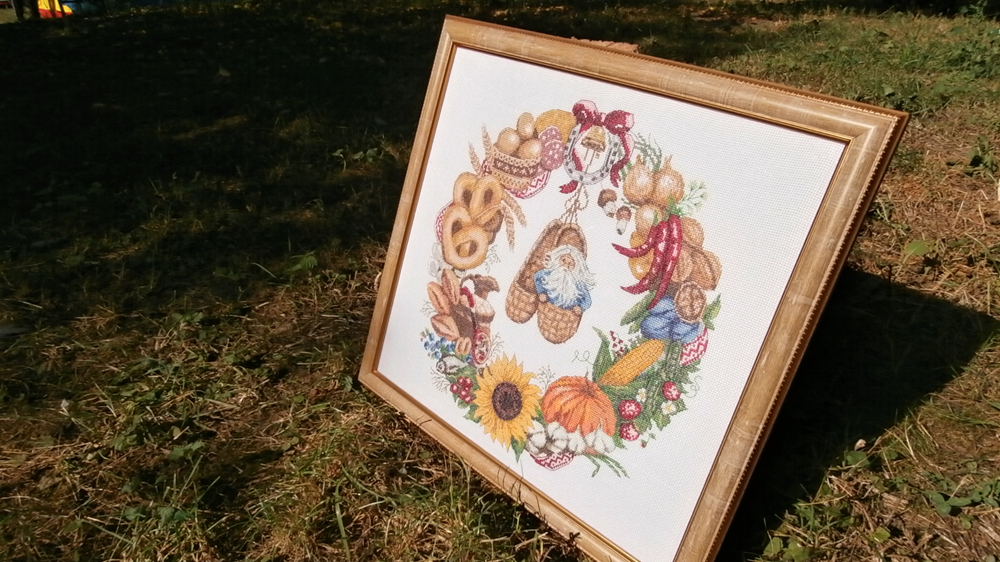

Сьогодні хочу познайомити вас з однією з моїх пристрастей - це вишивка.
Вишивка – це мистецтво шиття декоративними стібками по матеріалу. Це дуже давнє мистецтво.
Вишивка – це мистецтво шиття декоративними стібками по матеріалу. Це дуже давнє мистецтво.
В Україні налічується близько 100 видів і технічних прийомів вишивання (гладь, бісер, хрестик, мереження, плетіння тощо).
У вишивці вагоме значення має кольорова семантика (червоний — любов, жага, світло; чорний — смуток, нещастя зелений — весна, буяння, оновлення, життя тощо). Крім того, вишивання як національна традиція українок сприяло в минулому формуванню у дівчат і жінок терпіння, відчуття краси. Дівчина мала вишивати милому сорочку, хустину, весільні рушники. Вишитий своїми руками одяг був одним із головних показників працьовитості. Вишивка сьогодні живе, розвивається, збагачується новими аспектами. Сьогоднішня українська вишивка — результат унікальної духовно-матеріальної еволюції нашого народу. Впродовж багатьох століть в українській вишивці знаходять відображення думки і настрої людини, краса довкілля, її мрійливі сподівання на кращу добру долю, людські вірування, оберегова символіка речей, позначених доторком голки з ниткою.
Якщо вам цікаво, то ось посилання на визначення та історію вишивки.
З власного досвіду скажу - це затягує.... Коли ти сідаєш за вишивку - ти наче потрапляєш до якогось паралального ідеального світу. Все розмірено та спокійно (бо вишивка щось схоже до медитації; монотонна робота руками; ти просто відключаєш свої думки, бо вони зайняті лише тим, щоб правильно знайти хрестик на схемі, і таким же кольором нитки "намалювати" його на білій тканині; це щось типу ти "малюєш" текст, а css малює тобі колір сайту). Ще мені подобається, що ця справа розвиває в тобі терпіння, наполеглевість та уважність, бо якщо картина складна (наприклад в квадраті 10*10 кожен хрестик різного кольору, а їх в роботі може бути до 50, то натупити дуже легко, а виправити дуже складно). Але я це люблю! Це частина мене!
P.S.:(так як стаття повинна бути нормального розміру, щоб було де розверутися з селекторами, то познайомлю вас з частиною своїх робіт; добре, що вони зазделегіть сфоткані та описані.))))
В 2018 році я брала участь в місцевій виставці майстринь в районному центрі зайнятості. На цьому фото видно майже всі мої роботи (весільні рушники та вінчальні ікони, які було вишито та використано на весіллі, картини, обереги та феміда - ( бо я ж юрист, що не вишию в кабінет красоту?))).
На жаль фото гарної якості не збереглося.
Тепер більш детально про роботи.
Картина «Пара оленів» є чудовим інтер’єрним доповненням спальної або зальної кімнати. Парна кількість тварин, зображених на картинах є дуже символічним значенням, що сприяє сімейному благополуччю та зустрічі зі своєю половинкою. Якщо ви хочете зустріти своє кохання або поліпшити відносини, повісьте в будинку полотно із зображенням пари оленів.
Дана робота створена в техніці 3D рахунковий хрест в одне, два, три складення, напівхрест, бленд (поєднання кольорів). Використано 26 кольорів палітри Anchor. Картина оформлена рамкою-багетом у стилі модерн та захищена плексигласом (акриловим склом, що в 2,5 разів легше за звичайне скло та в 5 разів його міцніше, крім того не створює шматочків при падінні та не притягує пил); розмір 59,5 см. висота, 44 см ширина роботи.
Картина «Оберіг. Вінок достатку» вишита в техніці рахунковий хрест, напівхрест, бленд (поєднання кольорів), бекстич (контурний шов). Використано 42 кольорів палітри ПНК Кірова та витрачено близько 700 годин. Картина оформлена рамкою-багетом у стилі модерн та захищена плексигласом; розмір 43,5 см. висота, 46,5 см ширина роботи. Оберіг – найдревніший предмет, якому приписують надприродну здатність відвертати від його власника різні хвороби, біду, приносити щастя і гаразди та призначений захищати свого власника та його родину. Також вважається, що він може принести удачу, попередити про небезпеку, поліпшити стан здоров’я та фінансовий потік.
Феміда – давньогрецька богиня права і законного порядку. Була порадницею Зевса і наглядала за тим, щоб ні люди, ні боги не порушували законів.
Картина «Феміда» вишита восьмикольоровим чеським бісером технікою напівхрест з частковим зашиттям. Фон картини схожий на похмуре небо, що якнайкраще підійде до світлих (теплих) відтінків офісного приміщення. Процес створення картини зайняв близько 60 годин. Оформлена рамкою-багетом у класичному стилі та захищена плексигласом; розмір 46,4 см. висота, 24,3 см ширина роботи.
Картина «Моя сім’я, моя опора».
Сім’я – це фундамент, завдяки якому кожен із нас твердо стоїть на ногах і впевнений у майбутньому. Саме тому, що сім’я це здорово, мені й захотілося вишити таку картину в українському стилі.
Для кого вона підійде – мабуть для всіх;- раді такий подарунок отримати і мама з татом, молода родина з задоволенням прикрасить власну оселю, подарунок на новосілля, - та залюбки. Також такий подарунок чудово підійде до річниць весілля.
Картина вишита чеським бісером Preciosa в техніці напівхрест з частковим зашиттям; використано 21 колір і витрачено близько 260 годин. Оформлена картина рамкою-багетом у іспанському стилі та захищена плексигласом; розмір 45,5 см. висота, 47 см ширина роботи.
Картина «Букет троянд»
Картина з вишитих червоних троянд символізує пристрасне і вірне кохання. Окрім того, на вазі зображені пара птахів, що символізує сімейне благополуччя та зустріч зі своєю долею.
Дана робота вишита 40 кольорами муліне ПНК Кірова технікою рахунковий хрест («счётный крест»), напівхрест, бленд (поєднання кольорів), бекстич (контурний шов); витрачений час – 270 годин . Оформлена картина рамкою-багетом у італійському стилі та захищена плексигласом; розмір 59,2 см. висота, 41 см ширина роботи.
А ще на даний час маю в процесі свій "довгострой" (так називається процес, який тягнеться 100500 років).

Я його почала вишивати ще до першої вагітності, а зараз, на хвилиночку я мама дврх діток, старшому сину вже майже чотири)))) і досі продовжую вишивати (а тепер в мене з’явилась ідея "увійти в айті", то мабуть вишиватиму ще довго).
Робота дійсно велика (фото на фоні дивану) і потребує багато часу (то де вже я її не вишивала: і на роботі, і над ліжечком сонних і сина і донечки, і в лікарні, і в роддомі, і в дорозі, і в кафе.)